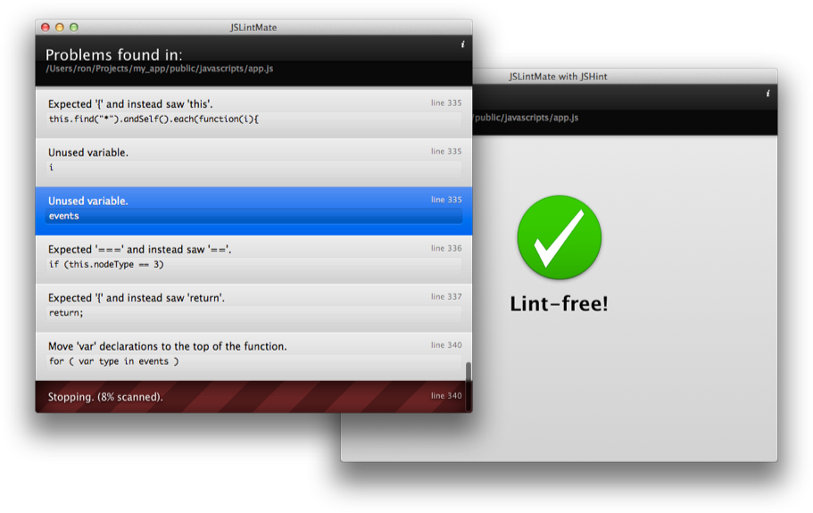
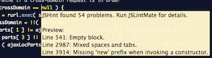

Quick, simple JSLint and JSHint in TextMate. Hurt your feelings in style.
 Fork me on GitHubJSLintMate is a quick and easy way to check your code with JSLint (Douglas Crockford’s powerful JS code quality tool) or JSHint (a community-driven version of JSLint that’s more tolerant of common JS patterns).
No more copy-pasting your JS into a browser to check it. JSLintMate runs within TextMate while you code, and works offline.
Download JSLintMate.tmbundle and double-click it. TextMate installs it automatically—that’s all.
JSLintMate has two modes:
Command-S automatically checks your JS, and reports any problems with a tooltip.
Hit control-L to check your code with JSLint, or control-shift-L to use JSHint.
A list of problems appears, if any. Click to jump to that line, or navigate with the arrow keys + return.
Have some favorite JSLint/JSHint options, like finding unused variables and ignoring whitespace? Drop them into an options file, either in your repository or on your own computer. This is great for:
More info is in the docs.
rondevera @ github / ronalddevera @ twitter / jslintmate @ github issues
Patches are welcome. Use JSLintMate for good, not evil.